Mapping dust extinction curve variation in 3D with Gaia XP
Tsinghua Astronomy, 16 August 2024
Gregory M. Green, Xiangyu Zhang (张翔宇)
(MPIA, Heidelberg)

Dust mapping
Dust mapping
Some people love dust.
Some people hate dust.
Dust mapping
Some people love dust.
Want to map dust clouds to understand star formation, dust properties, etc.
Some people hate dust.
Dust mapping
Some people love dust.
Want to map dust clouds to understand star formation, dust properties, etc.
Some people hate dust.
Want to map dust to correct their observations.
Dust mapping
Dust mapping
Universal extinction curve: $A\left(\lambda\right) / A\left(\lambda_0\right)$.
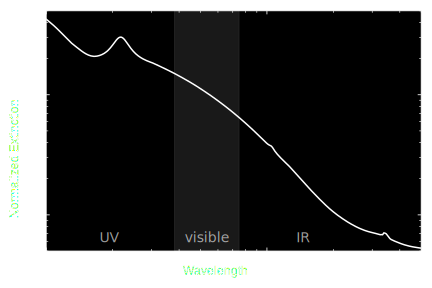Dust mapping
Universal extinction curve: $A\left(\lambda\right) / A\left(\lambda_0\right)$.
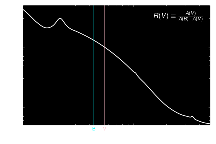Dust mapping
Dust mapping
Dust mapping
Varying extinction curve.

Data
Gaia BP/RP spectrophotometry
(“XP spectra”)
- $R \sim 50-160$
- slitless spectroscopy
- optical (330—1050 nm)
- 220 million stars (in DR3)

Example XP spectra

Example XP spectra

Example XP spectra
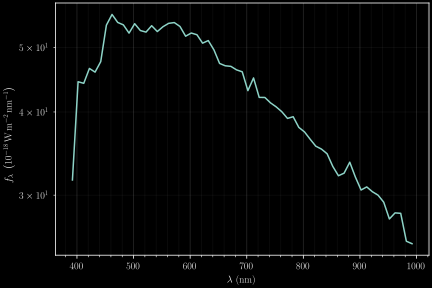Comparison with LAMOST
- 20× as many stars
- 1/20th the resolution
- Flux-calibrated
- All-sky, uniform selection function
Modeling approach
How to extract astrophysical information from these spectra?
How to extract astrophysical information from these spectra?

How to extract astrophysical information from these spectra?

How to extract astrophysical information from these spectra?
- Cross-match with higher-resolution spectra.
- Learn how to map from stellar type to BP/RP flux: $f_{\lambda} \left(\lambda\right)$.
- Use this model to infer stellar types, distances, extinctions.
(Include NIR photometry from 2MASS & WISE)
Gaia-LAMOST crossmatch
2.6 million matches.
Bootstrap the 1% of BP/RP stars with LAMOST matches to determine types of the other 99%.
Forward model of stellar spectrum
$$ f_{\lambda}\left( \lambda \class{fragment}{\data{fragment-index=0}{ ,\class{star-color}{\Theta,\varpi,E,\xi} } } \right) \class{fragment}{\data{fragment-index=1}{ = {\color{gray} \underbrace{ \color{white} \ F_{\lambda}\left(\lambda,\class{star-color}{\Theta};\class{model-color}{W}\right) }_{ \mathrm{neural\ network} } } }} \class{fragment}{\data{fragment-index=2}{ \, \class{star-color}{\varpi^2} }} \class{fragment}{\data{fragment-index=3}{ \, e^{-\class{star-color}{E} \class{model-color}{R}\left(\lambda,\,\class{star-color}{\xi}\right)} }} $$
Stellar parameters:
- $\Theta =$ type (LAMOST)
- $\varpi =$ parallax (Gaia)
- $E =$ extinction (Bayestar19)
- $\xi =$ extinction curve shape (universal at first)
Model parameters:
- $W =$ neural net weights
- $R =$ extinction curve
$\xi$ plays the role of $R(V)$.
Model structure reflects the physics of $f_{\lambda}$.
Extinction model
$$ \vec{A} = \class{star-color}{E} \, \exp\left( \class{model-color}{\ln\vec{R}_0} + \class{star-color}{\xi} \,\class{model-color}{\Delta\ln\vec{R}} \right) $$
Mean extinction curve: $\class{model-color}{\ln\vec{R}_0}$
Variation in extinction curve: $\class{model-color}{\Delta\ln\vec{R}}$
$\class{star-color}{\xi}$ plays the role of $R(V)$.
Key: $$ \class{star-color}{\mathrm{stellar\ parameters}} \\ \class{model-color}{\mathrm{model\ parameters}} $$
Model structure

Model vs. Observations

Training the model
 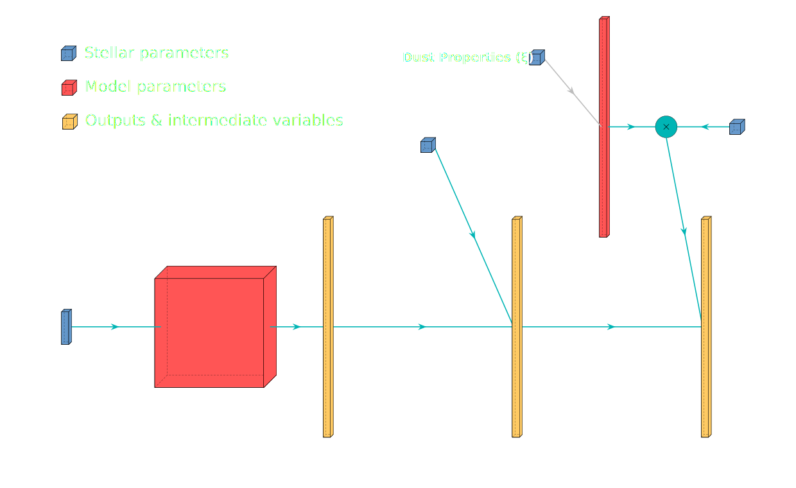
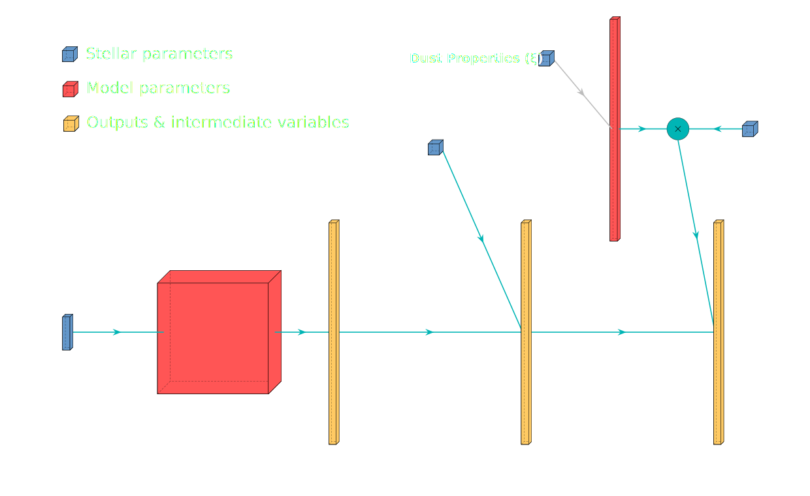
Update model, holding stellar parameters fixed.
Update stellar parameters, holding model fixed.
Converge on optimal model and stellar parameters.
Implemented in auto-differentiable framework (TensorFlow). ⇒ gradient descent.
Learned stellar models of Gaia XP spectra


Learned stellar parameters
Use XP spectra, NIR photometry & Gaia parallaxes to learn parameters of 220 million stars.
LAMOST spectra not used for parameter inference.
Infer $\xi$ for every star ...
Remove stars with bad $\chi^2/\mathrm{dof}$, low extinction, ...
~130 million R(V) measurements with XP (Zhang & Green 2024)
~130 million R(V) measurements with XP (Zhang & Green 2024)


Comparison with Schlafly+ (2016)
One-to-one relation between our extinction-curve measures
Comparison with Zhang+ (2023)
One-to-one relation between our extinction-curve measures
Compare with previous catalogs of R(V) ...
100s of R(V) measurements with O/B-stars (Gordon+23, Valencic+04)

~37,000 R(V) measurements with APOGEE/PS1 (Schlafly+2016)

~1 million R(V) measurements with LAMOST/XP (Zhang+2023)
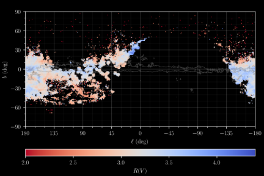~130 million R(V) measurements with XP (Zhang & Green 2024)
Distribution in the Galactic plane ...
100s of R(V) measurements with O/B-stars (Gordon+23, Valencic+04)
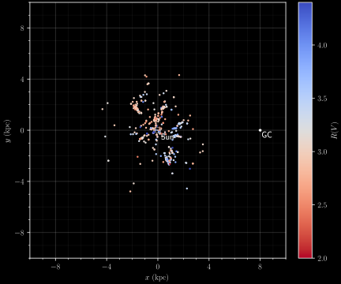~37,000 R(V) measurements with APOGEE/PS1 (Schlafly+2016)
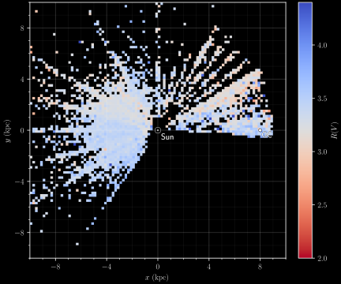~1 million R(V) measurements with LAMOST/XP (Zhang+2023)
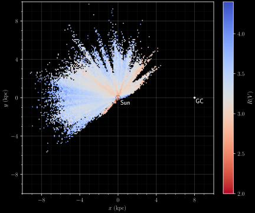~130 million R(V) measurements with XP (Zhang & Green 2024)

3D map of R(V) ...
“Undoing” the line-of-sight integral: $$ A\left(\ell,b\right) = \int_0^{r} \!\! A\left(\ell,b,r'\right) \, \mathrm{d}r' $$
~37,000 R(V) measurements with APOGEE/PS1 (Schlafly+16,17)
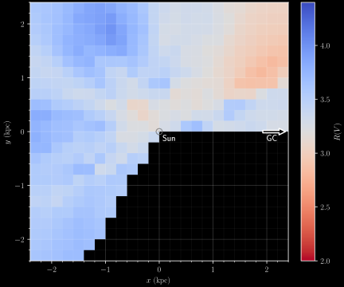~130 million R(V) measurements with XP (Zhang & Green 2024)

~130 million R(V) measurements with XP (Zhang & Green 2024)

~130 million R(V) measurements with XP (Zhang & Green 2024)
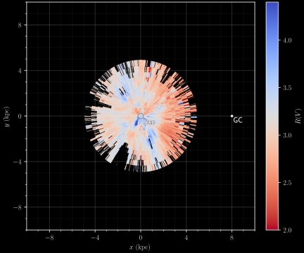Extinction in 3D
Extinction along individual sightlines


All-sky results from binning and averaging stars


Bird's-eye view of the Galactic plane
Patterns in the data

U-shaped relation: density vs. R(V):

 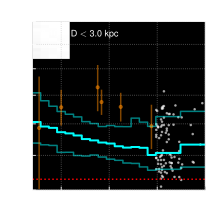
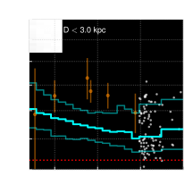
ρ Ophiuchus is different.

Connection between high R(V) and star formation / UV radiation?


R(V) in the Magellanic Clouds

Two takeaways:
- U-shaped relation between density & R(V).
- Star-formation / UV radiation correlated with high R(V).
Implications for dust composition
Dust-grain evolution

Dust-grain evolution
Grain-size distribution: $\frac{\mathrm{d}n}{\mathrm{d}a}$ $\propto a^{-3.5}$ (MRN 1977).
Accretion and R(V)
Accretion and R(V)
R(V) tends to decrease.
Occurs at intermediate densities (the translucent interstellar medium).
Large amount of additional mass needed to change R(V) with silicates.
Coagulation and R(V)
Coagulation and R(V)
R(V) tends to increase.
Important in dense cores of clouds.
A simple picture:
- Accretion reduces R(V) at intermediate densities (steeper exinction curve).
- Coagulation increases R(V) at high densities (flatter extinction curve).
What about star-forming regions?
- Cycling of large grains from dense molecular clouds back into the surrounding ISM?
- Destruction of PAHs by ionizing radiation?
C19H11 from PAHdb
Polycyclic Aromatic Hydrocarbon (PAH)
π→π* electronic transitions in the UV (responsible for 2175 Å extinction feature?).
Strong mid-IR emission features.
Several PAHs from PAHdb
Polycyclic Aromatic Hydrocarbon (PAH)
π→π* electronic transitions in the UV (responsible for 2175 Å extinction feature?).
Strong mid-IR emission features.

Hensley & Draine (2023) dust model.
As PAH mass increases, optical extinction becomes steeper (R(V) decreases).
Requires less mass to change R(V) than accretion onto silicates.
Importance of 2175 Å bump.
R(V) vs. PAH fraction

R(V) vs. PAH fraction
PAH destruction ⇒ high R(V).
Ionizing radiation in star-forming regions.
$Q_{\mathrm{PAH}}$ from Planck Collaboration (2016), based on the Draine & Li (2007) model.
Anti-correlation between $Q_{\mathrm{PAH}}$ and $R(V)$ in Perseus.
Anti-correlation between $Q_{\mathrm{PAH}}$ and $R(V)$ in Taurus.